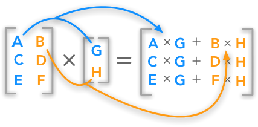

Projects

Food Recipe App
- Individual Project that was implemented and used the JavaFx gui as an interactive visual and connected two RESTful API's for information related to food analysis.
- User-Friendly Application that allows a user to enter in any food item, in a pop up box, and a full analysis will be projected on screen indicating nutrition info related to the food item, an image of that food item, and also a comprehensive food recipe that incorporates the entered in food item with step by step instructions.
- Developed in Java using JavaFx, with the help of the mealdb and edamam APIs to get necessary meal analysis information. Read a JSON String and converted the necessary components to Java code for use.
Bike Store Managment App
- Part of a team of four who developed an application responsible for managing key information realted to a bike stores's data such as inventory, prices for products, and employee information.
- Used MySQL as the database interpreter language and Springboot as the framework to display the application.
- User friendly application that lets the user search for a bike store's information based on store id or employee id information.

Interactive Mathematical Computation Application
- Graphical User Interface, that lets a user toggle through a drop down menu to perform mathematical computations on matrices, vectors, and plain lists of integer data from .txt files or manually entered in input in provided text boxes.
- User can pick from a wide array of mathematical operations such as: Gaussian Elimination, Interpolation Techniques such as LaGrange Interpolation, Numerical Integration, Natural to Binary Output, Vector and Matrix operations, etc.
- Developed in MATLAB, as a way to combine previous MATLAB programs into one interactive application.